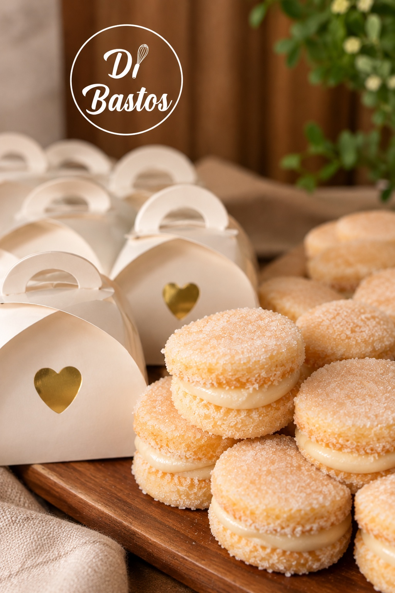
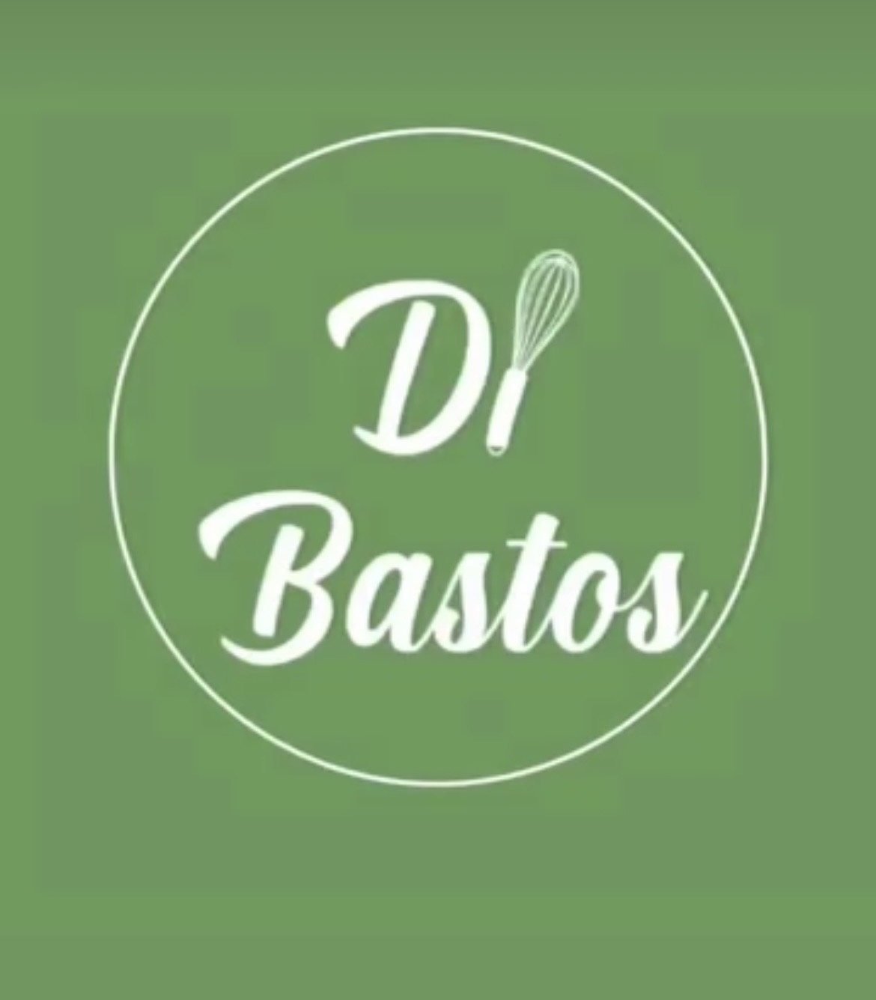
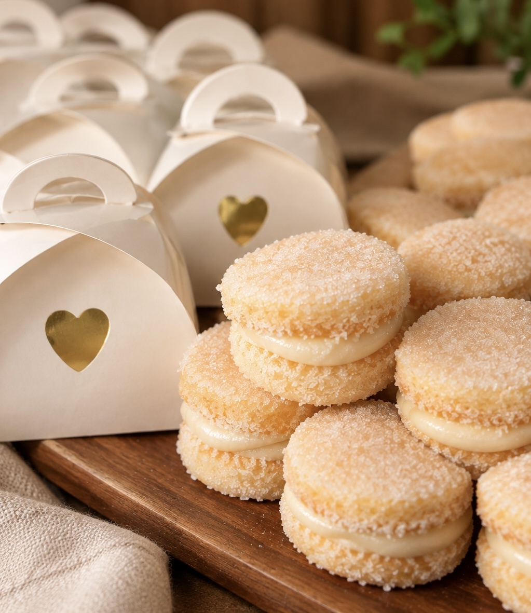
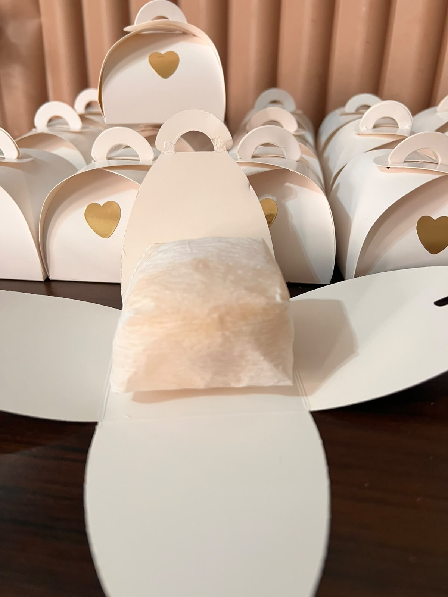
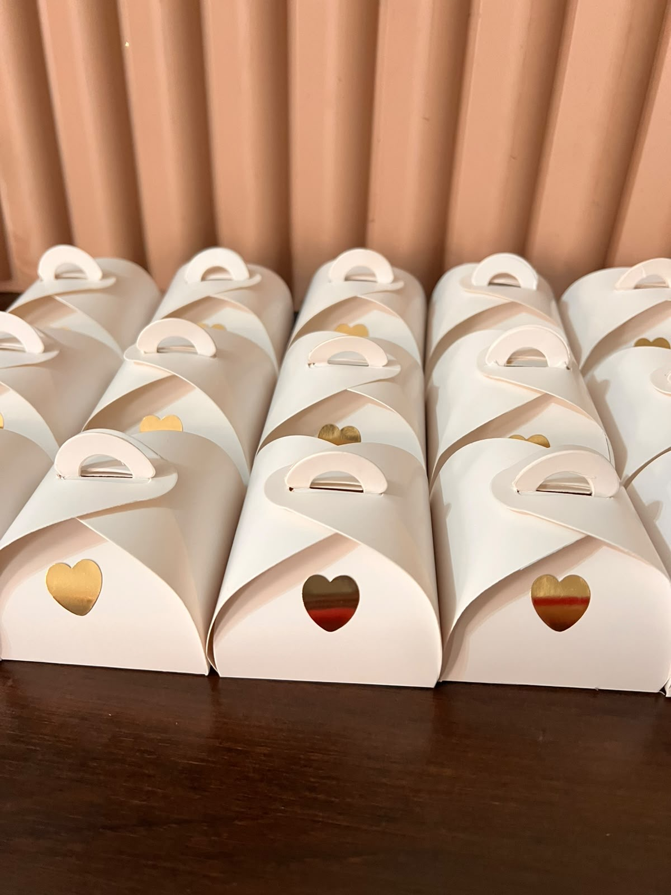

Sabor artesanal
Massa delicada e recheio cremoso em cada unidade.

Bem-casados artesanais para adoçar celebrações especiais com carinho, delicadeza e sabor.
Massa macia, recheio cremoso e uma delicada camada de açúcar: um clássico preparado para tornar sua comemoração ainda mais especial.

Conheça os detalhes dos nossos bem-casados e das embalagens preparadas para presentear seus convidados.

Massa delicada e recheio cremoso em cada unidade.

Apresentação individual, pensada com carinho.

Caixinhas off-white com delicados corações dourados.
Escolha a quantidade e o tipo de comemoração para iniciar seu orçamento pelo WhatsApp.